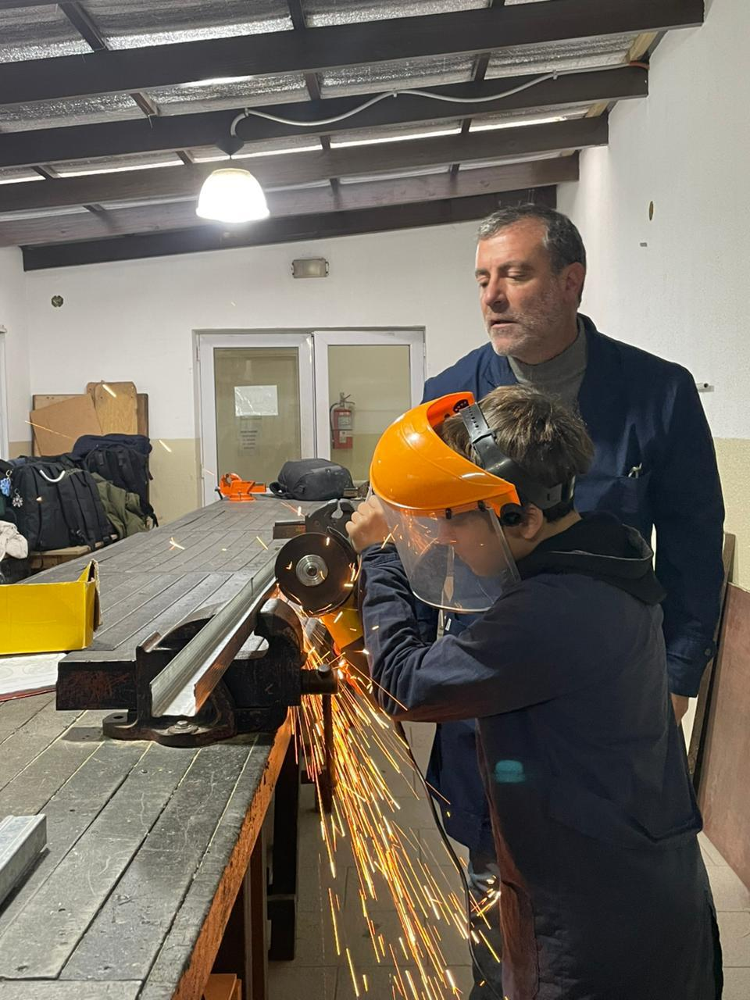
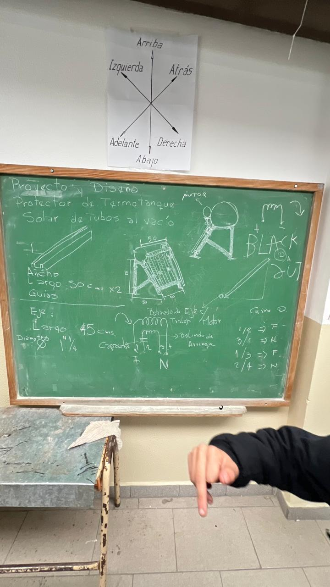
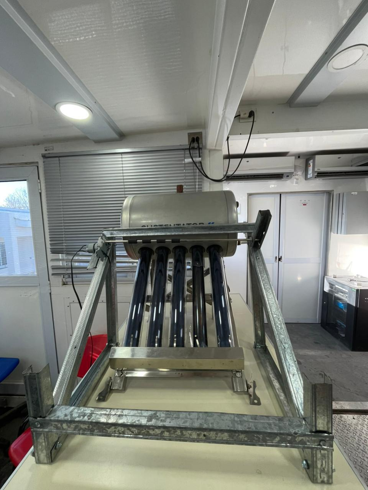
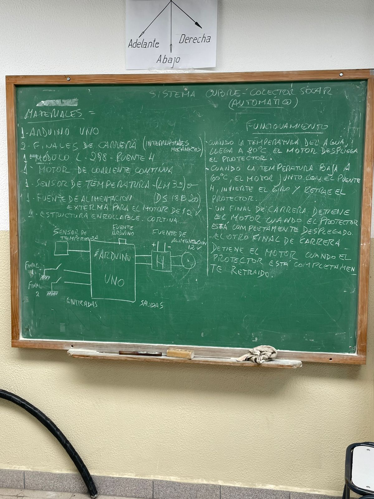

Protección inteligente y automatizada para termotanques solares. Prevenimos el sobrecalentamiento, evitamos el desperdicio de agua y protegemos el equipo contra condiciones climáticas adversas.
Conocer el proyecto en detalleLos tanques termosolares de tubos de vacío son una forma eficiente y sustentable para el calentamiento de agua. Sin embargo, presentan inconvenientes con respecto a las altas temperaturas que puede alcanzar el agua en jornadas de intensa radiación solar.
Para evitar daños causados por el exceso de presión, estos equipos cuentan con una válvula de alivio que libera vapor, produciendo una pérdida constante de agua, desperdicio y disminución de la eficiencia.
Ante esto, alumnos de 4° año desarrollamos este proyecto para evitar el desperdicio de agua y proteger los tubos de vacío, frágiles ante la lluvia y granizo.
La propuesta consiste en una cortina blackout automatizada con Arduino, capaz de regular la radiación recibida y brindar protección física. Un sensor monitorea la temperatura; al llegar a 80°C, la cortina se cierra automáticamente. Al descender a 60°C, se abre para retomar el funcionamiento normal.

Diseñamos la estructura, generamos imágenes del sistema, listado de materiales y bocetos a mano alzada.
Cortes de montantes y soleras de chapa, montaje de estructura, falta anclaje de motor y guías.


Realizamos montaje de motor eléctrico y ejes de cortinas sobre los montantes de chapa. Estructura armada.
Evaluación de automatización con Arduino para el despliegue y cerrado. Pruebas de funcionamiento.
